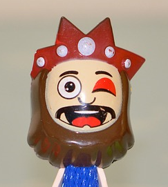

Melchor
Se cree que este nombre proviene de Europa, ya que es tradicionalmente representado por una persona de piel clara y barba blanca (en ocasiones rubia), representando una persona adulta. En supuesta alusión a los pueblos europeos. En representaciones teatrales populares, desfiles, etc. se le representa con una barba blanca. Su significado en hebreo es "rey de la luz". Representa la edad adulta del hombre y porta oro. En la novela Ben-Hur, Melchor es un brahmán procedente de la India.
Gaspar
Este nombre proviene de Asia, ya que es tradicionalmente representado por una persona con la barba oscura, en alusión a los pueblos asiáticos. Proviene del persa "kansbar", que significa "administrador del tesoro".

Muchos cristianos chinos creen que procedía de Mongolia. Portaba incienso. En la novela Ben-Hur, Gaspar es un sabio griego procedente de la ciudad de Atenas.
Baltasar
Se cree que este nombre (Bel-Sar-Utsor, equivalente de Dios protege al Rey) proviene de Babilonia, del mencionado en los libros del profeta Daniel como rey Baltasar. Representa la juventud del hombre. Era el portador de la mirra. También se relaciona con Baal (considerado divinidad por varios pueblos antiguos de Asia menor).En la novela Ben-Hur, Baltasar es un príncipe procedente de la ciudad egipcia de Alejandría.